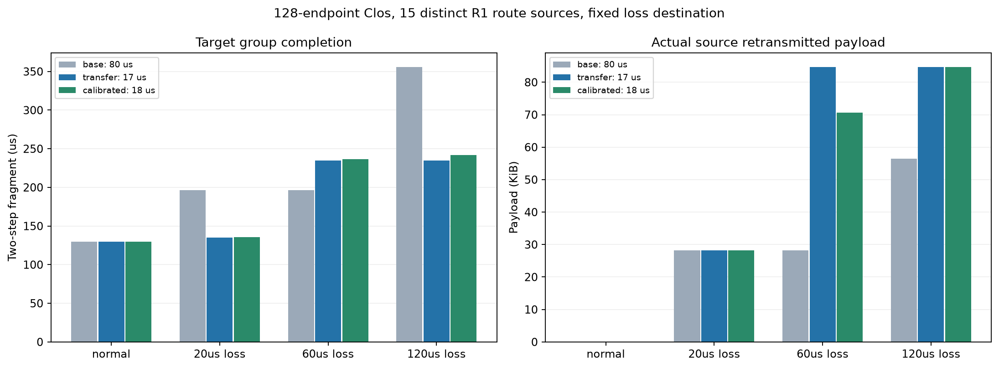

128端点Clos、四组EP32、15份不同R1-AWQ/MMLU专家选择（各组4/4/4/3请求）、两层两个Decode步。声明计算和标记字节，不是完整模型或硬件测量。所有策略均未执行备用。
80微秒原超时、沿用的17微秒、由十五请求正常样本单独校准的超时；只改变初始RTO，最大640微秒、3次重试和全部原始任务门限保持。正常条件不注入故障；其他条件在前20/60/120微秒丢弃GPU32的DATA，含重传，控制包保留。故障位置沿用上一轮，不按新负载增强热点。窗口与校准规则在运行前固定，无独立验证集。

| 条件 | RTOµs | 目标完成µs | 其他组最晚µs | 超时 | 故障丢包 | 重传B | 重传再次丢失B | 缓冲峰值B | 结果来源 |
|---|---|---|---|---|---|---|---|---|---|
| base-normal | 80.0 | 129.537 | 135.773 | 0 | 0 | 0 | 0 | 7025344 | 独立执行 |
| base-loss20 | 80.0 | 196.31 | 131.894 | 2 | 4 | 28928 | 0 | 6953280 | 独立执行 |
| base-loss60 | 80.0 | 196.31 | 131.894 | 2 | 4 | 28928 | 0 | 6953280 | 独立执行 |
| base-loss120 | 80.0 | 356.035 | 131.894 | 4 | 8 | 57856 | 28928 | 5540608 | 独立执行 |
| transfer-normal | 17.0 | 129.537 | 135.773 | 0 | 0 | 0 | 0 | 7025344 | 独立执行 |
| transfer-loss20 | 17.0 | 135.318 | 132.332 | 2 | 4 | 28928 | 0 | 6924544 | 独立执行 |
| transfer-loss60 | 17.0 | 235.035 | 131.894 | 6 | 12 | 86784 | 57856 | 5540608 | 独立执行 |
| transfer-loss120 | 17.0 | 235.035 | 131.894 | 6 | 12 | 86784 | 57856 | 5540608 | 独立执行 |
| calibrated-normal | 18.0 | 129.537 | 135.773 | 0 | 0 | 0 | 0 | 7025344 | 独立执行 |
| calibrated-loss20 | 18.0 | 135.786 | 131.906 | 2 | 4 | 28928 | 0 | 6924544 | 独立执行 |
| calibrated-loss60 | 18.0 | 236.766 | 131.894 | 5 | 10 | 72320 | 43392 | 5540608 | 独立执行 |
| calibrated-loss120 | 18.0 | 242.035 | 131.894 | 6 | 12 | 86784 | 57856 | 5540608 | 独立执行 |
重传载荷由全部实际源包与完整有效载荷之差核算；“重传再次丢失”只计算已经发送过的字节在故障端再次丢弃的部分，不把原包丢失算进去。不同EP组的完成时延不相加；别名策略不是独立样本。
正常目标均129.537微秒，三策略完整包与队列记录一致。20微秒故障时17微秒超时比80微秒早60.992微秒；60微秒故障时反而晚38.725微秒、多重传57,856字节；120微秒故障时早121微秒。正常校准得到的18微秒也没有消除60微秒窗口的退避代价。不能按事后已知故障时长选择最快结果并算作已实现策略。
60微秒窗口内，17微秒策略前两轮重传仍丢，第三轮才成功；80微秒策略第一轮就已避开窗口。18微秒策略中，源0的重传首包57.392微秒到达仍丢，源12因不同跳数与排队在60.755微秒到达成功。接收端按实际到达时刻丢包，发送时刻不能代替到达时刻。
匹配20微秒故障条件下，健康组2最多晚438纳秒：关键包增加453纳秒交换机驻留，带上已有6纳秒发送差，再减后续21纳秒传输跨度，最终传播到组完成。Agg133端口2可看到恢复目标组的实际包占线。这是小幅、可解释的竞争，不支持严重全网拥塞的结论。
应先检查成熟超时及指数退避是否解释了变化，再判断是否需要新的恢复预算或调度。若固定短超时在某些窗口更慢，那是适用边界，不自动证明新机制必要；若新负载正常条件出现重传，还需要和正常校准策略对照。原始包、源确认、阶段门限和实际专家开始在派生证据中保留，不能从单个专家结果提前推断请求加速。
这些固定窗口是机制压力测试，没有生产频率或p99证据。17微秒或校准值都不是生产参数建议；真实专家选择也不代表真实激活字节或物理GPU性能。所有完整执行仍保留原ACK和资源退出义务。
公开核验与贡献诊断、原图/输入一致性和独立包字节核算完成后才能作为交付；网页仅做静态资源检查，不声称浏览器渲染。